Environment Dashboard
Active Services & Codebases
🐳 comfyui
- comfyui-sidecar-1
comfyui-sidecarUp 23 secondsUptime (Last 7 days)
Churn (Last 7 days)
- comfyui-comfyui-1
comfyui-comfyuiUp About a minuteUptime (Last 7 days) Churn (Last 7 days)
Churn (Last 7 days)
🐳 delightd
- delightd-delightd-1
delightd-delightdUp 3 hoursUptime (Last 7 days)
Churn (Last 7 days)
🐳 la-domestique
- la-domestique-web-1
la-domestique-webUp 5 hoursUptime (Last 7 days) Churn (Last 7 days)
Churn (Last 7 days)
- la-domestique-geometry-engine-1
la-domestique-geometry-engineUp 6 hours (healthy)Uptime (Last 7 days)
Churn (Last 7 days)
🐳 odysseus
- odysseus-odysseus-1
odysseus-odysseusUp 9 hoursUptime (Last 7 days) Churn (Last 7 days)
Churn (Last 7 days)
- odysseus-searxng-1
searxng/searxng:2026.5.31-7159b8aedUp 9 hours (healthy)Uptime (Last 7 days) Churn (Last 7 days)
Churn (Last 7 days)
- odysseus-chromadb-1
chromadb/chroma:latestUp 9 hoursUptime (Last 7 days) Churn (Last 7 days)
Churn (Last 7 days)
- odysseus-ntfy-1
binwiederhier/ntfyUp 9 hoursUptime (Last 7 days) Churn (Last 7 days)
Churn (Last 7 days)
🐳 transparent
- transparent-transparent-1
transparent-transparentUp 3 hoursUptime (Last 7 days)Churn (Last 7 days)